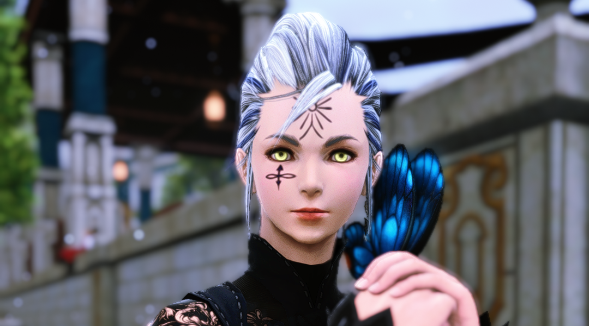
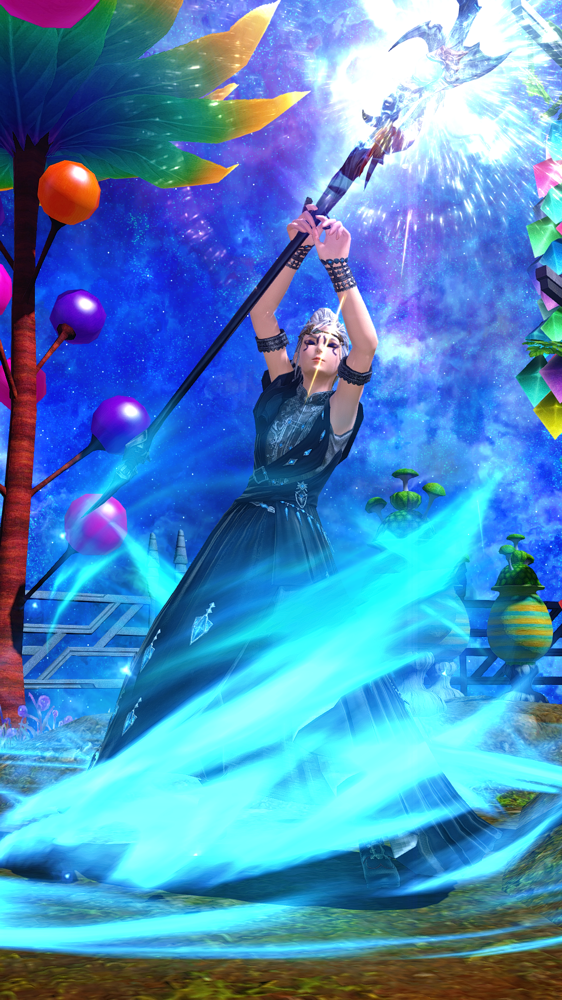
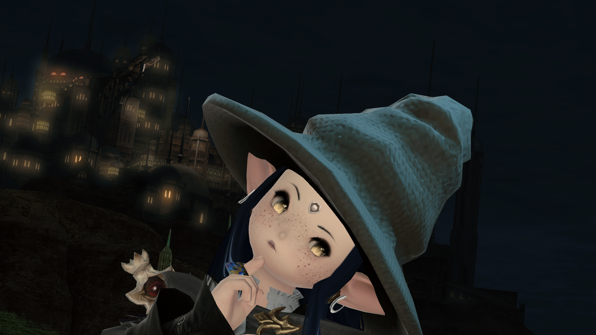
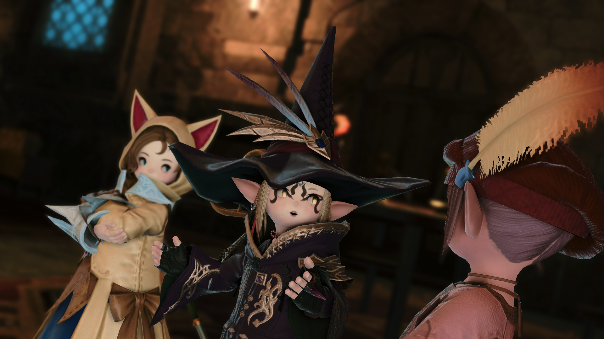
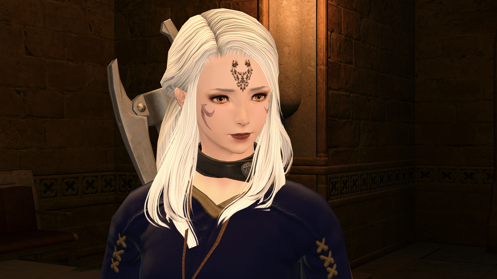
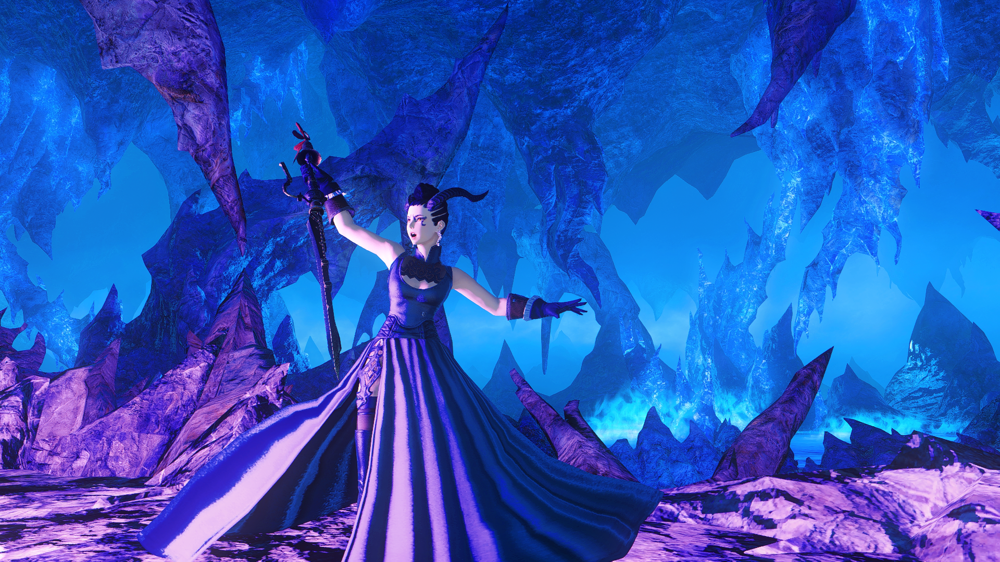
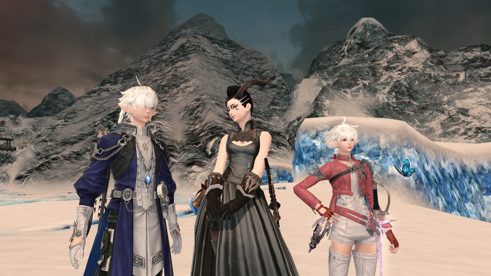

Snow Loppe
Detailae
Name:
Snow Loppe
Titles:
Seer
Battle role:
ranged caster, aetheric expert
Race:
Hyur - Midlander
Age:
20s
Diety:
Thaliak
Height:
5'2"
Gender:
nae
Interest:
none
Once-home:
Token Ard/Angelic
Home city:
Ul'dah
Main Job:
Red Mage
Other Jobs:
Black Mage, Summoner, Scholar
Career:
Mentor to Alisaie and Alphinaud Leveilleur
Corpae
Well! This will prove to be uncomfortable.
I, Snow Loppe, am a humble mage of The Blue. While I believe my appearance is, for the most part, unremarkable, I will relay what others have professed:
My gold eyes can be surprising, while my many body-paints and tattoos cause some to see me quite the dangerous character!
I do assure you, I am simply a student of the arcane, the aetheric, and the elemental; a simple rank and file mage eager to do all possible in the name of good.